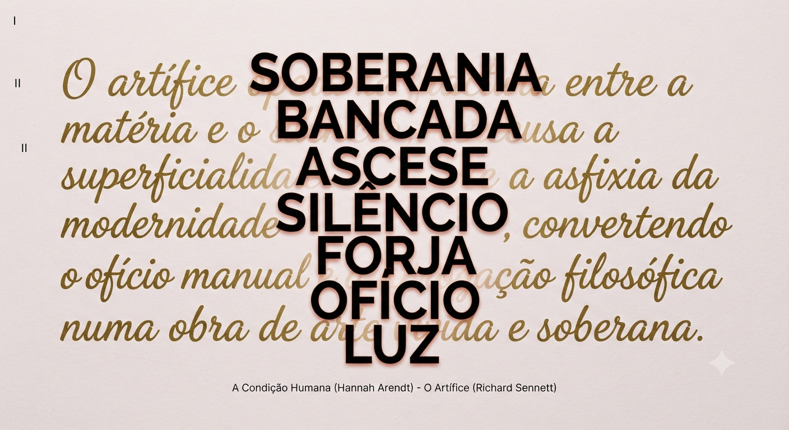

Título: Artífice
Técnica: Digital, com recurso a IA
Teoria Crítica: Hannah Arendt / Richard Sennett
Data: 15/09/2026
Apresentação:
Esta lâmina conceptual constitui a cartografia visual e filosófica do artífice total, estruturando-se como uma estela de contracultura contemporânea que contrapõe a união do ofício manual com a ascese monástica do pensamento contra a superficialidade asfixiante da modernidade líquida. Sobre um campo mate de luz diáfana e um murmúrio caligráfico dourado que evoca a persistência da memória e da matéria, erguem-se em coluna os conceitos absolutos da soberania e da forja, ancorados na linhagem crítica de Hannah Arendt e Richard Sennett para lembrar que a liberdade não se mendiga — constrói-se na interseção exacta entre o silêncio e o rigor do trabalho.
Proposta de Reflexão:
Na correria de um mundo digital que nos quer sempre ocupados e vazios, o artífice é aquele que decide parar. Ele recusa o papel de mero consumidor ou tarefeiro da modernidade e volta-se para o essencial: o trabalho feito com as próprias mãos, a reflexão sem pressas e o rigor de quem domina o seu próprio tempo. A sua função não é agradar ao mercado nem procurar aplausos fáceis, mas sim construir uma vida com sentido e peso real. Entre o ritmo da bancada e a densidade do pensamento, o artífice prova que criar não é um mero capricho, mas um acto de inteira liberdade — a arte de esculpir, na matéria de cada dia, uma autonomia inalienável.
Notas e Apêndices
- Hannah Arendt - A Condição Humana
- Richard Sennett - O Artífice
Leitura recomendada:
- Filme sugerido:
- Jiro Dreams of Sushi (2011), documentário por David Gelb
Instruções de Geração:
Cria uma obra de arte contemporânea conceptual de Text Art (poesia visual tipográfica em quatro camadas estratificadas), concebida na estética de uma estela de arquivo e de um jardim zen de contracultura. - Estrutura e Camadas da Obra: 1. CAMADA I (O Campo Base / Fundo): Um suporte de papel artesanal de alta gramagem, de tom quase branco, opaco e mate (sem qualquer brilho), infundido com uma subtilíssima e etérea tonalidade de rosa pálido, a funcionar como um campo de silêncio e luz pura. 2. CAMADA II (O Murmúrio Caligráfico / A Descrição do Artífice): Sobreposta ao fundo mate, cobrindo com elegância e sobriedade a superfície em caligrafia manuscrita de traço limpo, arquitetónico e contemporâneo (recusando qualquer floreado barroco), repousa a narrativa descritiva do artífice executada inteiramente em tinta dourada mate e profunda: "O artífice opera na fractura entre a matéria e o silêncio; recusa a superficialidade e a asfixia da modernidade líquida, convertendo o ofício manual e a interrogação filosófica numa obra de arte vivida e soberana." 3. CAMADA III (As Palavras-Conceito / Pedras Essenciais): Flutuando com rigor assimétrico de jardim zen sobre a caligrafia dourada, cortando-a com autoridade visual, estendem-se apenas as palavras-chave mais fortes e essenciais, tipografadas num único tipo de letra minimalista, industrial e severo, a negro carvão profundo com um subtil brilho de fogo nas arestas, grandes e expressivas: * SOBERANIA * BANCADA * ASCESE * SILÊNCIO * FORJA * OFÍCIO * LUZ 4. CAMADA IV (O Rodapé Crítico): Na margem inferior da lâmina, impresso em letras miúdas, sóbrias e estritamente a negro carvão, constando apenas o título e o autor das obras fundadoras: "A Condição Humana (Hannah Arendt) - O Artífice (Richard Sennett)" - Estilo Visual Geral: Plano 2D ortogonal direto (flat lay de alta resolução; na horizontal) que evidencia o contraste táctil entre o papel mate rosa-quase-branco, o relevo austero da caligrafia dourada, a corte nítida das palavras-conceito a negro com reflexo de brasa, e o rodapé limpo.